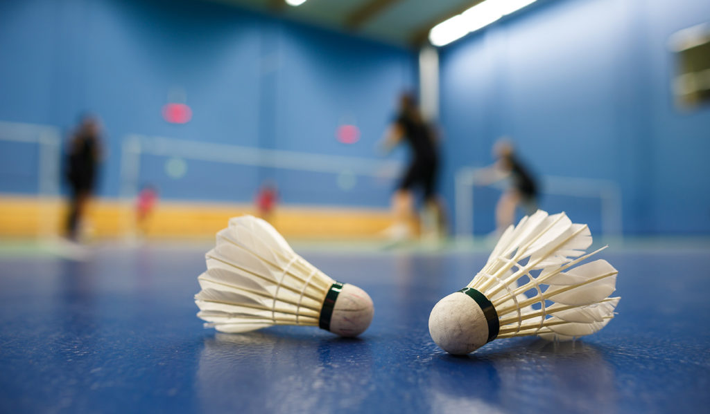

Điều 2. Cầu thi đấu trong luật thi đấu cầu lông
- Cầu được làm từ chất liệu thiên nhiên, hoặc tổng hợp. Cho dù quả cầu được làm từ chất liệu gì thì đặc tính đường hay tổng quát của nó phải tương tự với đường bay của quả cầu được làm từ chất liệu thiên nhiên có đế bằng Lie phủ một lớp da mỏng.
- Cầu lông vũ:
+ Quả cầu có 16 lông vũ gắn vào đế cầu.
+ Các lông vũ phải đồng dạng và có độ dài trong khoảng 62mm đến 72mm tính từ lông vũ cho đến đế cầu.
+ Đỉnh của các lông vũ phải nằm trên vòng tròn có đường kính từ 58mm đến 68mm.
+ Các lông vũ được buộc lại bằng chỉ hoặc vật liệu thích hợp khác.
+ Đế cầu có đường kính từ 25mm đến 28mm và đáy tròn.
+ Quả cầu nặng từ 4,74 gram đến 5,50 gram.

- Cầu không có lông vũ:
+ Tua cầu, hay hình thức giống như các lông vũ làm bằng chất liệu tổng hợp, thay thế cho các lông vũ thiên nhiên.
+ Đế cầu tương tự như cầu có lông vũ
+ Các kích thước, trọng lượng như trên. Tuy nhiên, có sự khác biệt về tỷ lệ trọng và các tính năng của chất liệu tổng hợp so với lông vũ, nên một sai sô tối đa 10% được chấp thuận.
- Do không có thay đổi về thiết kế tổng quát, tốc độ, đường bay của quả cầu, nên có thể thay đổi bổ sung một số tiêu chuẩn trên với sự chấp nhận của Liên đoàn thành viên liên hệ, đối với những nơi mà điều kiện khí hậu phụ thuộc vào độ cao hay khí hậu làm cho quả cầu tiêu chuẩn không còn thích hợp nữa.